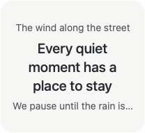
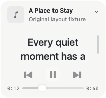

The line that matters
The current line stands out. Surrounding lyrics give it context. Longer lines have room to breathe.
 LyricTile
LyricTile
Keep the music going. Keep your place.
The line being sung stays quietly at the side of your desktop.
Made for Apple silicon Mac · macOS 27+
Runs independently. Nearpane is not required.

Keep your player in the background. Lyrics, song details, and playback controls stay close to your work.
The current line stands out. Surrounding lyrics give it context. Longer lines have room to breathe.

Hover for artwork, song details, playback, and progress. Move away to return to the lyrics.

No lyrics? A small song summary remains. Stop playback and the panel gives the space back.
Preparing the first release
The latest candidate is completing release verification. The final installer and its checksums will appear here together.
Cloud candidates are for engineering review and may require GitHub sign-in. Old build 4 is not offered as the latest download.